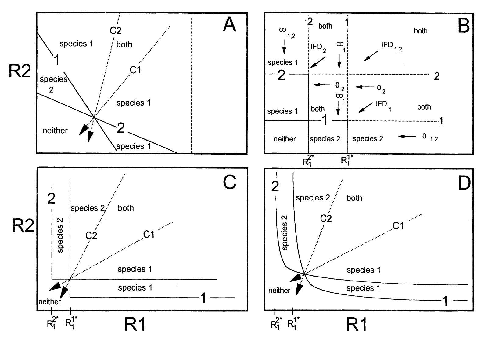

In this session, we discussed about the resource-consumer model.
Materials
The video record of the seminar can be found HERE.
The Mathematica notebook is HERE.
Model
The two-species resource-consumer competition model is defined as
\[ \begin{aligned} \frac{dN_1}{dt} &= \left(\mu_1 - m \right) N_1 \\ \frac{dN_2}{dt} &= \left(\mu_2 - m \right) N_2 \\ \frac{dR}{dt} &= a \left(R_{in}-R \right) - V_1 N_1 - V_2 N_2 \end{aligned} \]
where \(N_1\), \(N_2\) are the population sizes of species 1 and 2, respectively. \(\mu_1\) and \(\mu_2\) are the growth rates while \(V_1\) and \(V_2\) are the consumption rates. \(m\) is the background mortality rate. For the dynamics of the resource, \(R_{in}\) denotes for the inflow concentration and \(a\) is the dilution rate.
The growth rate often follows the functional form of Mechanis-Menten-Monod:
\[ \begin{aligned} \mu:=\mu_{max}\frac{R}{R+K} \end{aligned} \]
where \(\mu_{max}\) is the maximum growth rate when the resource is adequate. \(K\) is the half-saturation rate. Therefore, the growth rate when the resoruce is at low density is given by the slope of this function at low \(R\)
\[ \frac{\mu_{max}}{K} \]
Given the nonlinearity of the growth rate, the curves may cross. So, imagine a situation where Species 1 has a larger growth rate when the resource is sufficient while Species 2 has a higher growth rate when the resource is scarce,
\[ \mu_{1,max}>\mu_{2,max};\frac{\mu_{1,max}}{K_1}<\frac{\mu_{2,max}}{K_2} \]
which species will win?
The simulation
Try on this interactive plot and see which species would win.
#| standalone: true
#| viewerHeight: 800
#| viewerWidth: 900
library(shiny)
library(bslib)
library(plotly)
library(Matrix)
growth_rate <- function(mu_max,k, R){
return(mu_max * R / (R + k))
}
Sim_rc <- function(tt, mu11, mu12, mu21, mu22,
k11,k12,k21,k22,
v11, v12, v21, v22,
r1in, r2in,
N10, N20, R10, R20,
m,
mode) {
N1 <- c(N10)
N2 <- c(N20)
R1 <- c(R10)
R2 <- c(R20)
for(ti in 1:tt){
temp_N1 <- N1[ti]
temp_N2 <- N2[ti]
temp_R1 <- R1[ti]
temp_R2 <- R2[ti]
for(tii in 1:100){
if(mode == "ess"){
mu1 <- min(growth_rate(mu11, k11, temp_R1), growth_rate(mu12, k12, temp_R2))
mu2 <- min(growth_rate(mu21, k21, temp_R1), growth_rate(mu22, k22, temp_R2))
c11 <- min(growth_rate(v11, k11, temp_R1), growth_rate(v12, k12, temp_R2))
c12 <- min(growth_rate(v11, k11, temp_R1), growth_rate(v12, k12, temp_R2))
c21 <- min(growth_rate(v21, k21, temp_R1), growth_rate(v22, k22, temp_R2))
c22 <- min(growth_rate(v21, k21, temp_R1), growth_rate(v22, k22, temp_R2))
} else {
mu1 <- growth_rate(mu11, k11, temp_R1) + growth_rate(mu12, k12, temp_R2)
mu2 <- growth_rate(mu21, k21, temp_R1) + growth_rate(mu22, k22, temp_R2)
c11 <- v11 * temp_R1
c12 <- v12 * temp_R2
c21 <- v21 * temp_R1
c22 <- v22 * temp_R2
}
dN1 <- (mu1 - m) * temp_N1 / 100
dN2 <- (mu2 - m) * temp_N2 / 100
dR1 <- ((r1in - temp_R1) - c11 * temp_N1 - c21 * temp_N2) / 100
dR2 <- ((r2in - temp_R2) - c12 * temp_N1 - c22 * temp_N2) / 100
temp_N1 <- max(temp_N1 + dN1, 0)
temp_N2 <- max(temp_N2 + dN2, 0)
temp_R1 <- max(temp_R1 + dR1, 0)
temp_R2 <- max(temp_R2 + dR2, 0)
}
N1 <- c(N1, temp_N1)
N2 <- c(N2, temp_N2)
R1 <- c(R1, temp_R1)
R2 <- c(R2, temp_R2)
}
return(data.frame(N1 = N1, N2 = N2, R1 = R1, R2 = R2, cc = 1:(tt+1)))
}
# Define UI for app that draws a histogram ----
# Define UI for app that draws a histogram ----
ui <- fluidPage(
headerPanel(''),
fluidRow(
column(12,
textOutput("text"),
tags$head(tags$style("#text{color: black;
font-size: 30px;
font-style: italic;
}"
)
),
plotlyOutput("plot1", width=700, height=250),
plotlyOutput("plot2", width=700, height=250)
)
),
fluidRow(
column(4,
div(style="height: 80px;",sliderInput('mu1max', HTML("μ<sub>1,max</sub>"), 1.4, min = 0.1, max = 2)),
div(style="height: 80px;",sliderInput('mu2max', HTML("μ<sub>2,max</sub>"), 1.1, min = 0.1, max = 2))
),
column(4,
div(style="height: 80px;", sliderInput('k1', HTML("K<sub>1</sub>"), 2.5, min = 0.1, max = 3)),
div(style="height: 80px;",sliderInput('k2', HTML("K<sub>2</sub>"), 0.4, min = 0.1, max = 3))
),
column(4,
div(style="height: 80px;", sliderInput('m', "m", 0.4, min = 0.01, max = 1)),
)
)
)
server <- function(input, output, session) {
output$text <- renderText({
"Michaelis-Menten-Monod growth"
})
# sim lv model
sim_result <- reactive({
Sim_rc(100, input$mu1max, 0, input$mu2max, 0,
input$k1,0, input$k2, 0,
3 * input$mu1max, 0, 3 * input$mu2max,0,
10, 10, 0.1, 0.1, 1, 1, input$m,
"sub")
})
# browser()
output$plot1 <- renderPlotly({
R <- seq(0, 10, 0.01)
mu1 <-reactive({
growth_rate(input$mu1max, input$k1, R)
})
mu2 <-reactive({
growth_rate(input$mu2max, input$k2, R)
})
gr <- data.frame(re = R, mu1 = mu1(), mu2 = mu2())
# browser()
p <- plot_ly(data = gr) %>%
add_trace(x = ~re, y = ~mu1, type = 'scatter', mode = 'lines', name = 'Species 1') %>%
add_trace(x = ~re, y = ~mu2, type = 'scatter', mode = 'lines', name = 'Species 2')
p <- p %>%
add_segments(y=input$m, yend = input$m, x = 0, xend=10, type = 'scatter', mode = 'lines', name = "m")
# xlim
# p <- p %>% layout(xaxis = list(range = c(0, 2)),
# yaxis = list(range = c(0, 2)))
p <- p %>% layout(xaxis = list(title = "Time"),yaxis = list(title = "Growth rate"))
p
})
output$plot2 <- renderPlotly({
# browser()
p <- plot_ly(data = sim_result()) %>%
add_trace(x = ~cc, y = ~N1, type = 'scatter', mode = 'lines', name = 'Species 1') %>%
add_trace(x = ~cc, y = ~N2, type = 'scatter', mode = 'lines', name = 'Species 2')
# xlim
# p <- p %>% layout(xaxis = list(range = c(0, 2)),
# yaxis = list(range = c(0, 2)))
p <- p %>% layout(xaxis = list(title = "Time"),yaxis = list(title = "Density"))
p
})
}
# Create Shiny app ----
shinyApp(ui = ui, server = server)The zero-net-growth-isocline (ZNGI) analysis of a two-species-two-resource model
The ZNGI analysis we talked in the previous lecture on the Lotka-Volterra model can also infer the outcome of the competition on the resource-consumer model. For simplicity, we just assume that the growth rate is linear.
The following figure compares the ZNGIs analysis of the essential and substitutable resource models (Vincent et al. 1996).

The essential resource model
The two-species-two-essential-resource model is given by
\[ \begin{aligned} \frac{dN_1}{dt} &= \left( \min(\mu_{11}R_1, \mu_{12}R_2) - m \right) N_1\\ \frac{dN_2}{dt} &= \left( \min(\mu_{21}R_1, \mu_{22}R_2) - m \right) N_2\\ \frac{dR_1}{dt} &= a \left(R_{1,in}-R_1 \right) - \min(V_{11}R_1, V_{12}R_2) N_1 - \min(V_{21}R_1, V_{22}R_2) N_2 \\ \frac{dR_2}{dt} &= a \left(R_{2,in}-R_2 \right) - \min(V_{11}R_1, V_{12}R_2) N_1 - \min(V_{21}R_1, V_{22}R_2) N_2 \\ \end{aligned} \]
The substitutable resource model
The two-species-two-substitutable-resource model is given by
\[ \begin{aligned} \frac{dN_1}{dt} &= \left( \mu_{11}R_1 + \mu_{12}R_2 - m \right) N_1\\ \frac{dN_2}{dt} &= \left( \mu_{21}R_1 + \mu_{22}R_2 - m \right) N_2\\ \frac{dR_1}{dt} &= a \left(R_{1,in}-R_1 \right) - V_{11}R_1 N_1 - V_{21}R_1 N_2 \\ \frac{dR_2}{dt} &= a \left(R_{2,in}-R_2 \right) - V_{12}R_2 N_1 - V_{22}R_2 N_2 \\ \end{aligned} \]
The ZNGI analysis
We take the essential resource competition model as an example. The ZNGIs of the two species are given by
\[ \begin{aligned} \min(\mu_{11}R_1, \mu_{12}R_2) - m &= 0\\ \min(\mu_{21}R_1, \mu_{22}R_2) - m &= 0 \end{aligned} \]
which gives the two “L” shaped ZNGIs in the plot.
If the two ZNGIs cross, the crossing point is a potential coexistence destination. Whether it is a stable equilibrium relies on the impact vectors and the resource supply rates. See Lecture 2 for details.
#| standalone: true
#| viewerHeight: 800
#| viewerWidth: 1000
Sim_rc_ess <- function(tt, mu11, mu12, mu21, mu22,
q11, q12, q21, q22,
r1in, r2in,
N10, N20, R10, R20,
m) {
N1 <- c(N10)
N2 <- c(N20)
R1 <- c(R10)
R2 <- c(R20)
for(ti in 1:tt){
temp_N1 <- N1[ti]
temp_N2 <- N2[ti]
temp_R1 <- R1[ti]
temp_R2 <- R2[ti]
for(tii in 1:100){
mu1 <- min(mu11 * temp_R1, mu12 * temp_R2)
mu2 <- min(mu21 * temp_R1, mu22 * temp_R2)
dN1 <- (mu1 - m) * temp_N1 / 100
dN2 <- (mu2 - m) * temp_N2 / 100
dR1 <- ((r1in - temp_R1) - q11 * mu1 * temp_N1 - q21 * mu2 * temp_N2) / 100
dR2 <- ((r2in - temp_R2) - q12 * mu1 * temp_N1 - q22 * mu2 * temp_N2) / 100
temp_N1 <- max(temp_N1 + dN1, 0)
temp_N2 <- max(temp_N2 + dN2, 0)
temp_R1 <- max(temp_R1 + dR1, 0)
temp_R2 <- max(temp_R2 + dR2, 0)
}
N1 <- c(N1, temp_N1)
N2 <- c(N2, temp_N2)
R1 <- c(R1, temp_R1)
R2 <- c(R2, temp_R2)
}
return(data.frame(N1 = N1, N2 = N2, R1 = R1, R2 = R2, cc = 1:(tt+1)))
}
Sim_rc_sub <- function(tt, mu11, mu12, mu21, mu22,
v11, v12, v21, v22,
r1in, r2in,
N10, N20, R10, R20,
m) {
N1 <- c(N10)
N2 <- c(N20)
R1 <- c(R10)
R2 <- c(R20)
for(ti in 1:tt){
temp_N1 <- N1[ti]
temp_N2 <- N2[ti]
temp_R1 <- R1[ti]
temp_R2 <- R2[ti]
for(tii in 1:100){
mu1 <- mu11 * temp_R1 + mu12 * temp_R2
mu2 <- mu21 * temp_R1 + mu22 * temp_R2
dN1 <- (mu1 - m) * temp_N1 / 100
dN2 <- (mu2 - m) * temp_N2 / 100
dR1 <- ((r1in - temp_R1) - v11 * temp_R1 * temp_N1 - v21 * temp_R1 * temp_N2) / 100
dR2 <- ((r2in - temp_R2) - v12 * temp_R2 * temp_N1 - v22 * temp_R2 * temp_N2) / 100
temp_N1 <- max(temp_N1 + dN1, 0)
temp_N2 <- max(temp_N2 + dN2, 0)
temp_R1 <- max(temp_R1 + dR1, 0)
temp_R2 <- max(temp_R2 + dR2, 0)
}
N1 <- c(N1, temp_N1)
N2 <- c(N2, temp_N2)
R1 <- c(R1, temp_R1)
R2 <- c(R2, temp_R2)
}
return(data.frame(N1 = N1, N2 = N2, R1 = R1, R2 = R2, cc = 1:(tt+1)))
}
# Define UI for app that draws a histogram ----
# Define UI for app that draws a histogram ----
ui <- fluidPage(
fluidRow(
tabsetPanel(id = "tabset",
tabPanel("Essential",
fluidRow(
column(4,
div(style="height: 80px;",sliderInput('r1intab1', 'Supply R1', 1.4, min = 0.1, max = 1.8)),
div(style="height: 80px;",sliderInput('r2intab1', 'Supply R2', 1.1, min = 0.1, max = 1.8))
),
column(4,
div(style="height: 80px;", sliderInput('mu11tab1', HTML("μ<sub>11</sub>"), 1.5, min = 0.1, max = 2)),
div(style="height: 80px;",sliderInput('mu12tab1', HTML("μ<sub>12</sub>"), 0.4, min = 0.1, max = 2))
),
column(4,
div(style="height: 80px;",sliderInput('mu21tab1', HTML("μ<sub>21</sub>"), 0.4, min = 0.1, max = 2)),
div(style="height: 80px;",sliderInput('mu22tab1', HTML("μ<sub>22</sub>"), 1.25, min = 0.1, max = 2))
)
),
fluidRow(
column(4,
div(style="height: 80px;", sliderInput('mtab1', HTML("m"), 0.2, min = 0.1, max = 1))
),
column(4,
div(style="height: 80px;", sliderInput('q11', HTML("Q<sub>11</sub>"), 1.5, min = 0.1, max = 3)),
div(style="height: 80px;",sliderInput('q12', HTML("Q<sub>12</sub>"), 2.6, min = 0.1, max = 3))
),
column(4,
div(style="height: 80px;",sliderInput('q21', HTML("Q<sub>21</sub>"), 2.5, min = 0.1, max = 3)),
div(style="height: 80px;",sliderInput('q22', HTML("Q<sub>22</sub>"), 1.1, min = 0.1, max = 3))
)
)
),
tabPanel("Substitutable",
fluidRow(
column(4,
div(style="height: 80px;",sliderInput('r1intab2', 'Supply R1', 0.84, min = 0.1, max = 1.8)),
div(style="height: 80px;",sliderInput('r2intab2', 'Supply R2', 1.1, min = 0.1, max = 1.8))
),
column(4,
div(style="height: 80px;", sliderInput('mu11tab2', HTML("μ<sub>11</sub>"), 1.5, min = 0.1, max = 2)),
div(style="height: 80px;",sliderInput('mu12tab2', HTML("μ<sub>12</sub>"), 0.4, min = 0.1, max = 2))
),
column(4,
div(style="height: 80px;",sliderInput('mu21tab2', HTML("μ<sub>21</sub>"), 0.4, min = 0.1, max = 2)),
div(style="height: 80px;",sliderInput('mu22tab2', HTML("μ<sub>22</sub>"), 1.25, min = 0.1, max = 2))
)
),
fluidRow(
column(4,
div(style="height: 80px;", sliderInput('mtab2', HTML("m"), 0.5, min = 0.1, max = 1))
),
column(4,
div(style="height: 80px;", sliderInput('v11', HTML("V<sub>11</sub>"), 2.5, min = 0.1, max = 3)),
div(style="height: 80px;",sliderInput('v12', HTML("V<sub>12</sub>"), 1.6, min = 0.1, max = 3))
),
column(4,
div(style="height: 80px;",sliderInput('v21', HTML("V<sub>21</sub>"), 1, min = 0.1, max = 3)),
div(style="height: 80px;",sliderInput('v22', HTML("V<sub>22</sub>"), 2.1, min = 0.1, max = 3))
)
)
)
)),
fluidRow(
column(12,
plotlyOutput("plot", width=700, height = 400)
))
)
server <- function(input, output, session) {
output$plot <- renderPlotly({
if (input$tabset == "Essential") {
# sim lv model
sim_result_ess <- reactive({
Sim_rc_ess(100, input$mu11tab1, input$mu12tab1, input$mu21tab1, input$mu22tab1,
input$q11, input$q12, input$q21, input$q22,
input$r1intab1, input$r2intab1, 0.1, 0.1, input$r1intab1, input$r2intab1, input$mtab1)
})
R1_1 <-reactive({
input$mtab1 / input$mu11tab1
})
R2_1 <-reactive({
input$mtab1 / input$mu21tab1
})
R1_2 <-reactive({
input$mtab1 / input$mu12tab1
})
R2_2 <- reactive({
input$mtab1 / input$mu22tab1
})
R_star <- data.frame(R1_star = c(rep(R1_1(), 100), seq(R1_1(), 10, length.out=100)),
yrange1 = c(seq(R1_2(), 10, length.out=100), rep(R1_2(), 100)),
R2_star = c(rep(R2_1(), 100), seq(R2_1(), 10, length.out=100)),
yrange2 = c(seq(R2_2(), 10, length.out=100), rep(R2_2(), 100)))
p <- plot_ly(data = R_star) %>%
add_trace(x = ~R1_star, y = ~yrange1, type = 'scatter', mode = 'lines', name = 'dN1/dt = 0', line = list(color="#1c3144", width = 3)) %>%
add_trace(x = ~R2_star, y = ~yrange2, type = 'scatter', mode = 'lines', name = 'dN2/dt = 0', line = list(color = '#d00000', width = 3))
if((R1_1() - R2_1()) * (R1_2() - R2_2()) < 0){
R_eq_x <- max(R1_1(), R2_1())
R_eq_y <- max(R1_2(), R2_2())
arrows1 <- reactive({data.frame(start_x = c(R_eq_x),
start_y = c(R_eq_y),
end_x = c(R_eq_x * 0.7),
end_y = c(R_eq_y - (R_eq_x - R_eq_x * 0.7) * input$q12 * R_eq_y / (input$q11 * R_eq_x ) ))})
arrows2 <- reactive({data.frame(start_x = c(R_eq_x),
start_y = c(R_eq_y),
end_x = c(R_eq_x * 0.7),
end_y = c(R_eq_y - (R_eq_x - R_eq_x * 0.7) * input$q22 * R_eq_y / (input$q21 * R_eq_x) ))})
arrows1expend <- reactive({data.frame(x = seq(R_eq_x, 4, length.out = 100),
y = c(R_eq_y - (R_eq_x - seq(R_eq_x, 4, length.out = 100)) * input$q12 * R_eq_y / (input$q11 * R_eq_x )))})
arrows2expend <- reactive({data.frame(x = seq(R_eq_x, 4, length.out = 100),
y = c(R_eq_y - (R_eq_x - seq(R_eq_x, 4, length.out = 100)) * input$q22 * R_eq_y / (input$q21 * R_eq_x)))})
p <- p %>% add_trace(x = R_eq_x, y = R_eq_y, type = 'scatter', mode = 'markers',
name = 'Equilibrium', marker = list(color="black", size = 10)) %>%
add_trace(x = ~x, y = ~y, type = 'scatter', mode = 'lines', name = 'Impact 1', line = list(color="#1c3144", width = 3, dash = 'dash'),
data = arrows1expend()) %>%
add_trace(x = ~x, y = ~y, type = 'scatter', mode = 'lines', name = 'Impact 2', line = list(color = '#d00000', width = 3, dash = 'dash'),
data = arrows2expend()) %>%
add_annotations(x = ~end_x,
y = ~end_y,
xref = "x", yref = "y",
axref = "x", ayref = "y",
text = "",
showarrow = T,
ax = ~start_x,
ay = ~start_y,
arrowcolor='#1c3144',
data = arrows1()) %>%
add_annotations(x = ~end_x,
y = ~end_y,
xref = "x", yref = "y",
axref = "x", ayref = "y",
text = "",
showarrow = T,
ax = ~start_x,
ay = ~start_y,
arrowcolor='#d00000',
data = arrows2())
p <- p %>% add_trace(x =~R1, y =~R2, type = 'scatter', mode = 'lines+markers', name = 'Trajectory',
marker = list(color = ~cc, size =10), line = list(color = 'grey', width = 4), data = sim_result_ess())
}
} else {
# sim lv model
sim_result_sub <- reactive({
Sim_rc_sub(100, input$mu11tab2, input$mu12tab2, input$mu21tab2, input$mu22tab2,
input$v11, input$v12, input$v21, input$v22,
input$r1intab2, input$r2intab2, 0.1, 0.1, input$r1intab2, input$r2intab2, input$mtab2)
})
R1 <- seq(0, 20, 0.01)
R2_1 <-reactive({
(input$mtab2 - input$mu11tab2 * R1) / input$mu12tab2
})
R2_2 <- reactive({
(input$mtab2 - input$mu21tab2 * R1) / input$mu22tab2
})
R_star <- data.frame(R1 = R1, R2_1 = R2_1(), R2_2 = R2_2())
# solve the linear equations
A <- matrix(c(input$mu11tab2, input$mu21tab2, input$mu12tab2, input$mu22tab2), 2, 2)
b <- c(input$mtab2, input$mtab2)
sol <- solve(A, b)
R_eq_x <- sol[1]
R_eq_y <- sol[2]
p <- plot_ly(data = R_star) %>%
add_trace(x = ~R1, y = ~R2_1, type = 'scatter', mode = 'lines', name = 'dN1/dt = 0', line = list(color="#1c3144", width = 3)) %>%
add_trace(x = ~R1, y = ~R2_2, type = 'scatter', mode = 'lines', name = 'dN2/dt = 0', line = list(color="#d00000", width = 3))
if(sol[1]>0 & sol[2]>0){
arrows1 <- reactive({data.frame(start_x = c(R_eq_x),
start_y = c(R_eq_y),
end_x = c(R_eq_x * 0.7),
end_y = c(R_eq_y - (R_eq_x - R_eq_x * 0.7) * input$v12 * R_eq_y / (input$v11 * R_eq_x) ))})
arrows2 <- reactive({data.frame(start_x = c(R_eq_x),
start_y = c(R_eq_y),
end_x = c(R_eq_x * 0.7),
end_y = c(R_eq_y - (R_eq_x - R_eq_x * 0.7) * input$v22 * R_eq_y / (input$v21 * R_eq_x)))})
arrows1expend <- reactive({data.frame(x = seq(R_eq_x, 4, length.out = 100),
y = c(R_eq_y - (R_eq_x - seq(R_eq_x, 4, length.out = 100)) * input$v12 * R_eq_y / (input$v11 * R_eq_x)))})
arrows2expend <- reactive({data.frame(x = seq(R_eq_x, 4, length.out = 100),
y = c(R_eq_y - (R_eq_x - seq(R_eq_x, 4, length.out = 100)) * input$v22 * R_eq_y / (input$v21 * R_eq_x)))})
p <- p %>% add_trace(x = R_eq_x, y = R_eq_y, type = 'scatter', mode = 'markers',
name = 'Equilibrium', marker = list(color="black", size = 10)) %>%
add_trace(x = ~x, y = ~y, type = 'scatter', mode = 'lines', name = 'Impact 1', line = list(color="#1c3144", width = 3, dash = 'dash'),
data = arrows1expend()) %>%
add_trace(x = ~x, y = ~y, type = 'scatter', mode = 'lines', name = 'Impact 2', line = list(color = '#d00000', width = 3, dash = 'dash'),
data = arrows2expend()) %>%
add_annotations(x = ~end_x,
y = ~end_y,
xref = "x", yref = "y",
axref = "x", ayref = "y",
text = "",
showarrow = T,
ax = ~start_x,
ay = ~start_y,
arrowcolor='#1c3144',
data = arrows1()) %>%
add_annotations(x = ~end_x,
y = ~end_y,
xref = "x", yref = "y",
axref = "x", ayref = "y",
text = "",
showarrow = T,
ax = ~start_x,
ay = ~start_y,
arrowcolor='#d00000',
data = arrows2())
p <- p %>% add_trace(x =~R1, y =~R2, type = 'scatter', mode = 'lines+markers', name = 'Trajectory',
marker = list(color =~cc, size =10), line = list(color = 'grey', width = 4), data = sim_result_sub())
}
}
# xlim
p <- p %>% layout(xaxis = list(range = c(0, 2)),
yaxis = list(range = c(0, 2)))
# x label
p <- p %>% layout(xaxis = list(title = "R1"), yaxis = list(title = "R2"))
p
})
}
# Create Shiny app ----
shinyApp(ui = ui, server = server)For the substitutable resource model, you can play with the model by switching the tab to “Substitutable”.
References
Vincent, T. L. S., D. Scheel, J. S. Brown, and T. L. Vincent. “Trade-Offs and Coexistence in Consumer-Resource Models: It All Depends on What and Where You Eat.” The American Naturalist 148, no. 6 (1996): 1038–58. http://www.jstor.org/stable/2463561.
Chase, Jonathan M., and Mathew A. Leibold. Ecological Niches: Linking Classical and Contemporary Approaches. University of Chicago Press, 21 Feb 2013, 2003. doi:10.7208/chicago/9780226101811.001.0001. https://doi.org/10.7208/chicago/9780226101811.001.0001.